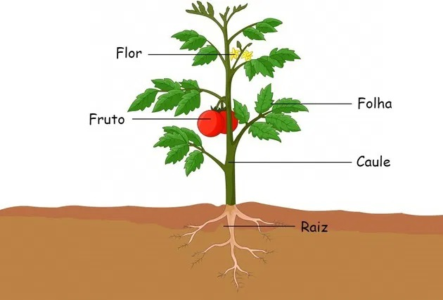

Juliana Diana
Professora de Biologia
Professora de Biologia
As partes da planta são as raízes, as folhas,o caule, as flores e frutos.
Cada parte desempenha uma função
importante para o vegetal, assim como os
órgãos do corpo humano.
Em resumo, as folhas fazem a respiração e a fotossíntese; as raízes absorvem substâncias do solo; o caule sustenta o vegetal; e as flores e frutos estão relacionados com a reprodução.
